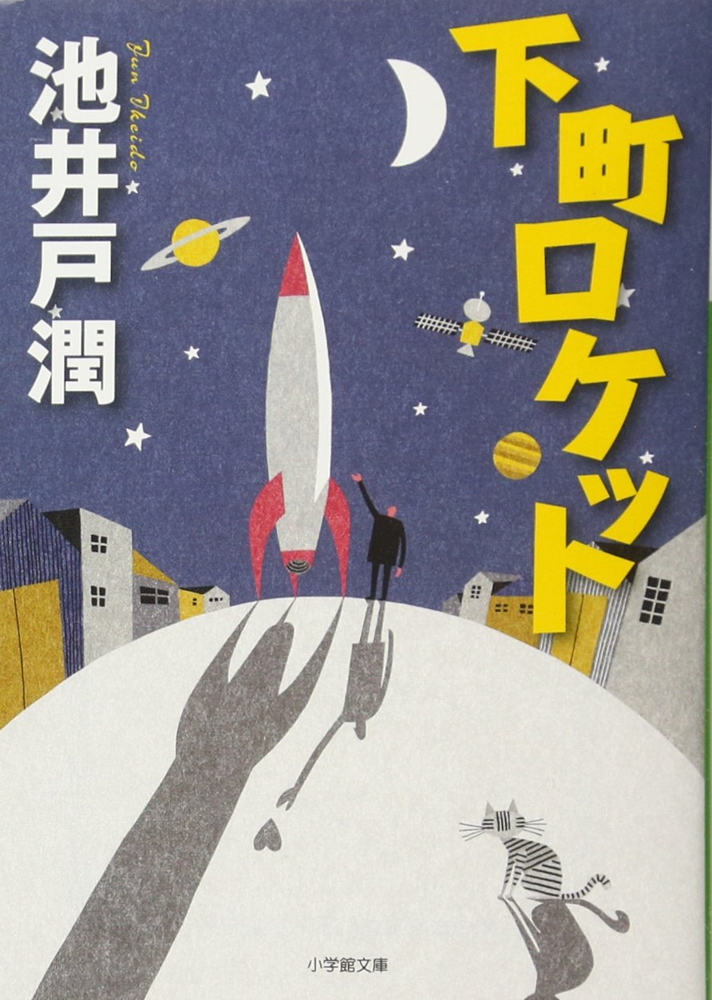
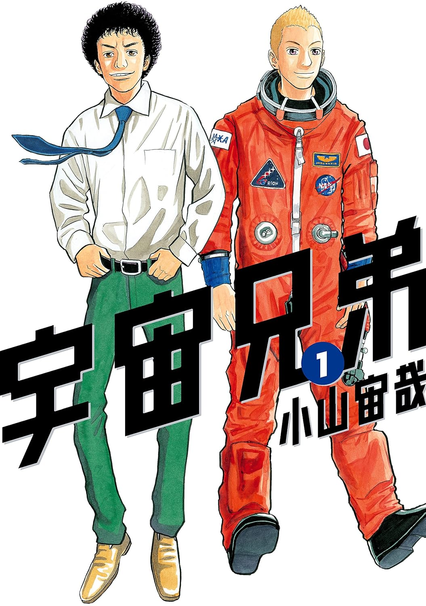
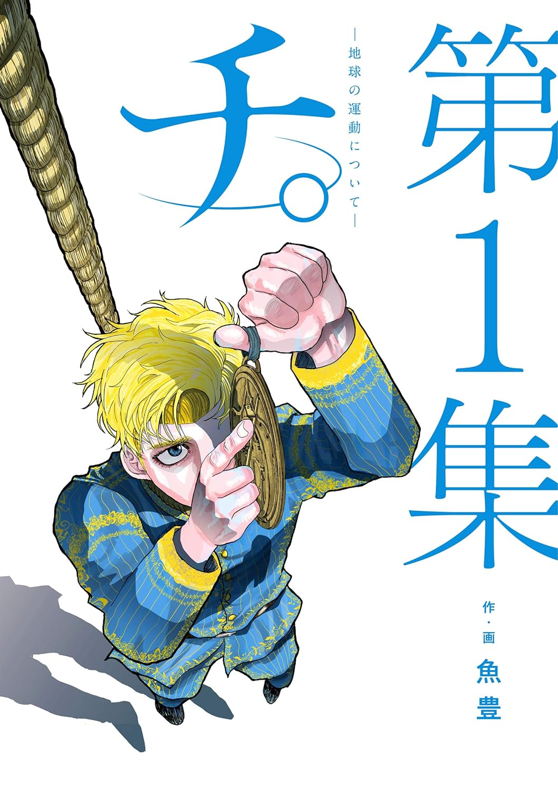

やすの趣味
やすが自分の趣味を勝手におすすめするコーナー。

下町ロケット 池井戸潤著
一番好きな小説は何かと聞かれたら答えるのがこれ。単純に池井戸ファンなのだが、その中でもダントツで面白い。さすが直木賞受賞作である。電車の中で読んでいたら乗り過ごしそうになったくらい没入する作品。ロケットというロマンあふれる題材なのがさらに好き度を増す。

宇宙兄弟 小山宙哉著
人はいつの間にか夢を忘れる。諦めるというより忘れる。そんな大人に夢を追いかける大切さを教えてくれる熱い熱いマンガ。このマンガに何度勇気をもらったことか。グッときた言葉は心のノートにメモしておくこと。ちなみに南波六太とは生まれ年が同じ。

チ。―地球の運動について― 魚豊著
天動説が信じられていた15世紀、地動説は異端として火あぶりに処せられてしまうような時代にありながら、天体の動きについての真実に一歩ずつ迫っていく物語。あくまで史実っぽいフィクションなのだが、科学をやっている人の信念や美学が描かれていてとにかく面白い。動かなかった地球を動かせ。歴史を動かせ。